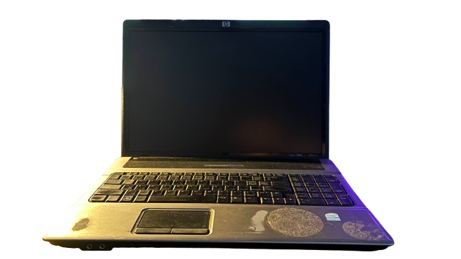
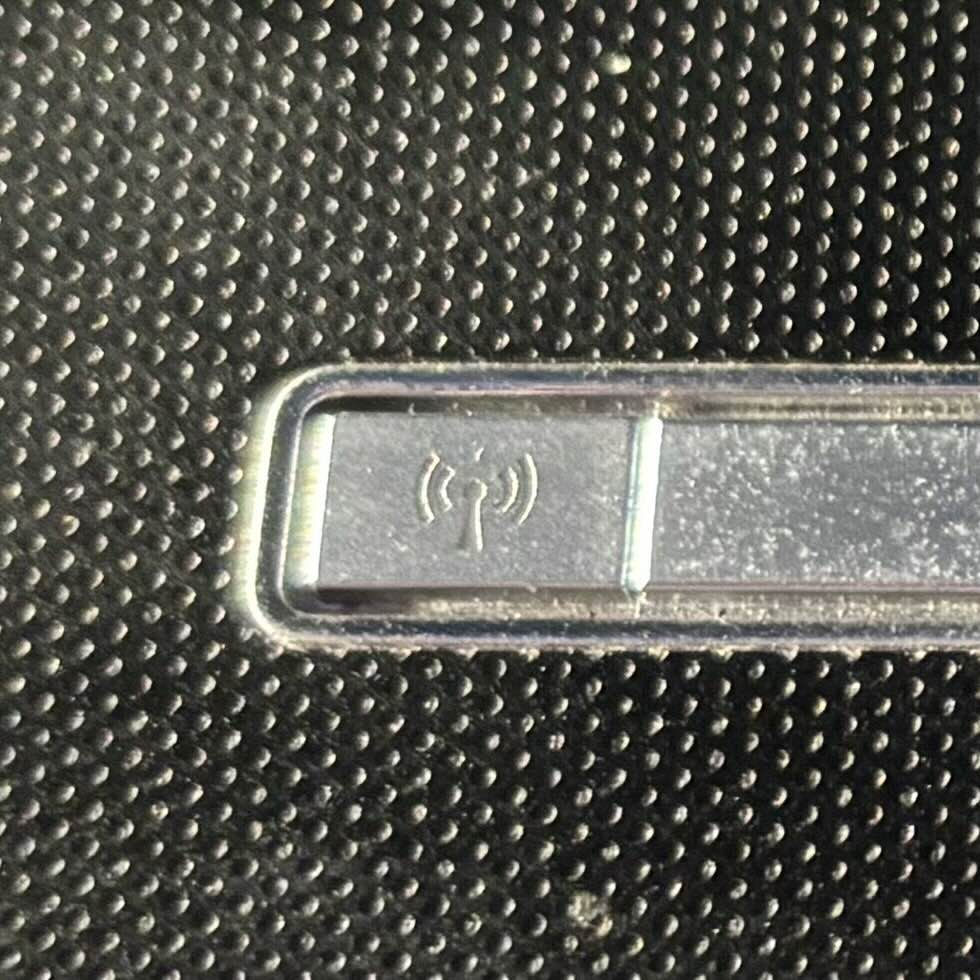
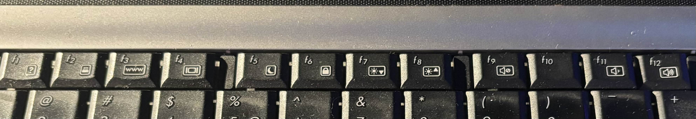

Name : HP Compaq 6820s
CPU : Pentium Dual Core 64Bit (dont remember Ghz)
GPU : 128Mb(vram)
RAM : 2Gb
CD/DVD : yes
FDD : no
Dial-Up : yes
Ethernet : yes
Wifi : yes (Bios has Whitelist)
Functional Battery : yes
Additional Buttons : yes
Additional Buttons List : Wifi On/Off Button
Function Buttons : yes
Function Buttons List : F1 - ⍰, F2 - Printer?, F3 - WWW, F4 - Change Video Output?, F5 - Sleep(moon), F6 - Lock, F7 - Brightness Down, F8 Brightness Up, F9 - Mute, F11 - Volume Down, F12 - Volume Up
  Are You Here becouse your hackintoshing this thing and found this page by accident ?
Fixed GPU Driver For Compaq6820s